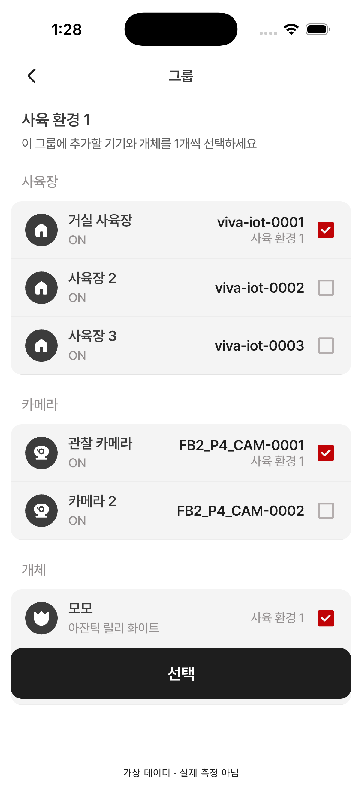
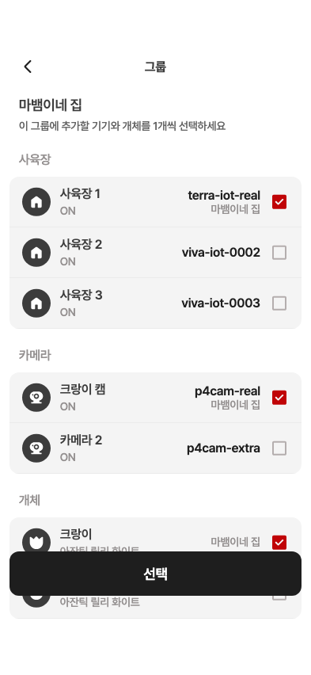
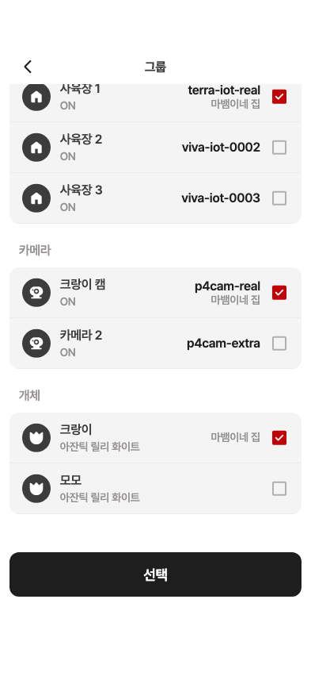

12 · 그룹 구성원 추가·변경
12 사용자 승인 완료 · 0.107.19+230
수정 반영: 종류별 목록 배경(#F4F4F4)과 12pt 둥근 모서리를 적용했습니다. 기본 행 64pt, 종류 간격 24pt, 체크박스 24pt를 원본과 대조했습니다.
항목 수를 원본과 같은 사육장 3·카메라 2·개체 2로 맞췄습니다. 원본은 미선택, QA는 기존 구성원이 선택된 상태입니다. 선택 버튼은 목록 위에 고정되며 체크가 없으면 비활성화됩니다.
Figma · 393×852 12 · 시뮬레이터 · 402×874
12 · 시뮬레이터 · 402×874
스크롤 전후 · 393×852 제품 위젯 캡처
목록만 움직이고 버튼은 같은 위치에 고정됩니다. 시뮬레이터 스크롤 캡처가 아닌 자동 위젯 드래그 결과입니다.
스크롤 전 · 목록 위 버튼
스크롤 후 · 마지막 항목 접근
수정 전 · 카메라 체크 해제 · 393pt 위젯 캡처(카메라 2개) · 검수 범위와 검증 결과